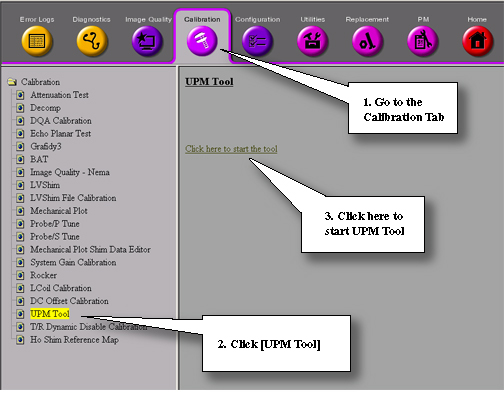
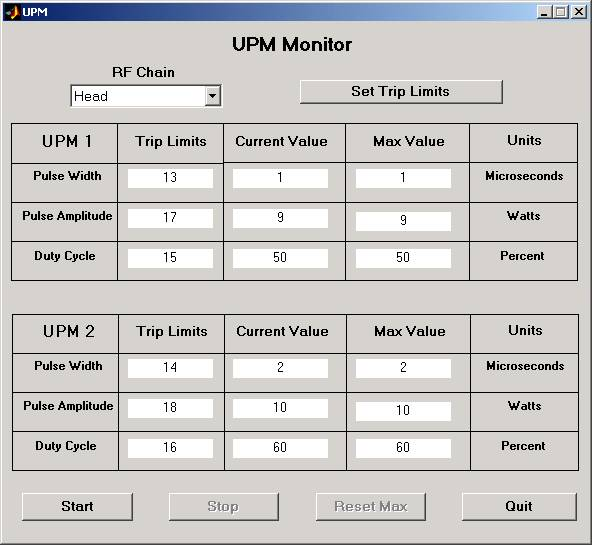
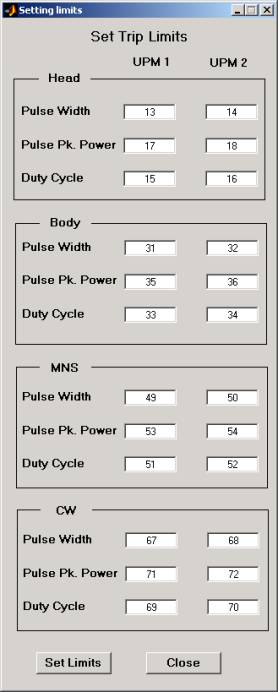

Operating Documentation
Direction 5440000, Rev# 5
Signa HDxt Service Methods
Module Version 1.0, Version Date 5/3/07
Operating Documentation |
| Required Persons | Preliminary Reqs | Procedure | Finalization |
|---|---|---|---|
| 1 | Not Applicable | 10 mins | Not Applicable |
| Last Update | 08/26/2004 |
Start any exam in question. If there is any questionable protocol used by the customer that appears to be wrongly tripping the UPM, use that exact same scan setup and protocol.
Landmark on the phantom being used and advance to scan.
From the Common Service Desktop, open the UPM tool. Refer to Illustration 1 for instructions starting UPM Tools from the Tools Service Desktop. Illustration 2 shows the UPM Interface.
Illustration 1: Starting UPM Tool

Click on the [Tools] menu and select the [UPM Monitor Tool] submenu. From the pull-down menu, select the RF Chain for which the scan is currently set. Illustration 2.
Illustration 2: UPM Monitor Tool (Values are for Illustration Purposes Only)

Return to the scan setup and select [Manual Prescan] and [Scan TR].
Return again to the UPM Monitor Tool. Click [Start]. Displayed in this tool will be the Trip Limits, Current Value and Max Value. If the either the Current Value or Max Value spikes to a value greater than the Trip Limit for any given parameter, the UPM will trip.
To set the Trip Limits to a new value, click on [Set Trip Limits], enter new values and click [Set Limits]. Any new values entered will remain in effect only for the given scan. As soon as a new scan is downloaded, the trip limits will reset to their default values. (see Illustration 3).
| NOTE: | Values shown in Illustration 3 are for Illustration Purposes Only. In Normal run mode, only the RF Chain in use will have any values associated with it. |
Illustration 3: Setting UPM Trip Limits

To stop running the tool at any time, select [Stop] and [Quit] from the UPM Monitor Tool main screen.
If it is suspected the UPM is not tripping when it should:
Perform steps UPM MONITOR TOOL USE, Step 1 - UPM MONITOR TOOL USE, Step 7 from UPM MONITOR TOOL USE. Be sure to use the same patient weight used in the customer scan that is causing suspicion in regards to the UPM.
Set the trip limits very low
If UPM Current Value and/or Max Value exceed the trip limits and the UPM does not trip, the UPM hardware may need to be replaced.
Put away any tools used during test.
Always perform a test scan before customer turn over to ensure system operation.